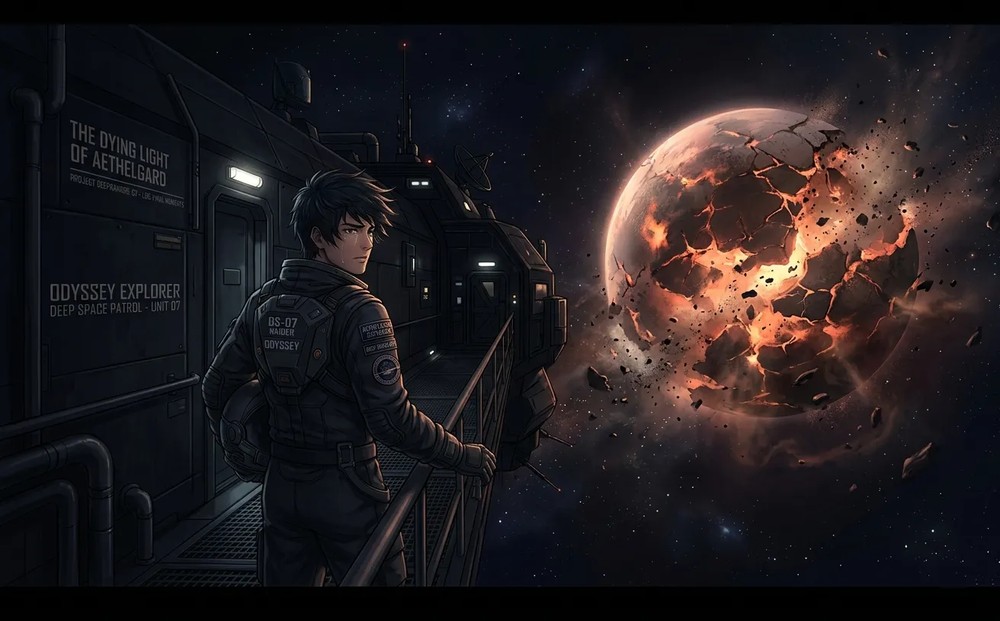
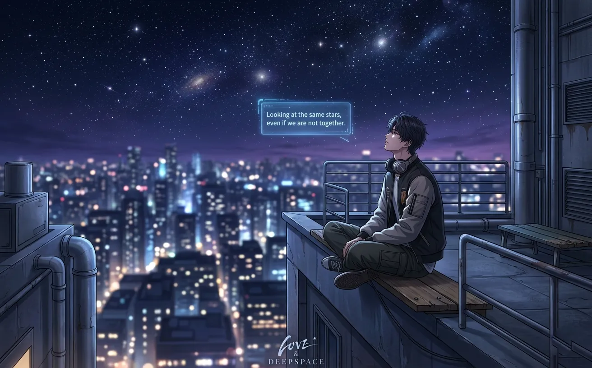
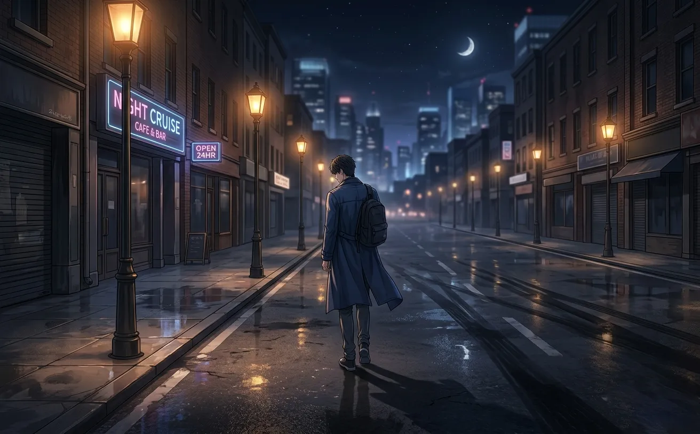
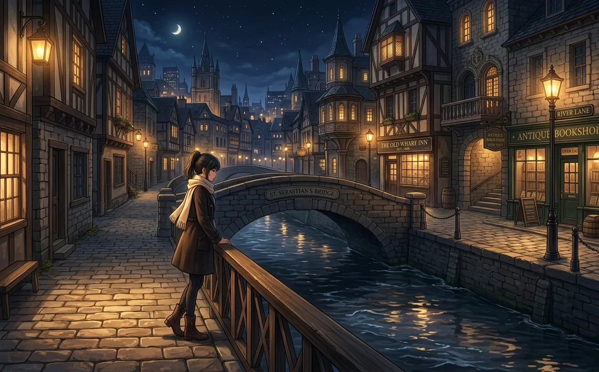
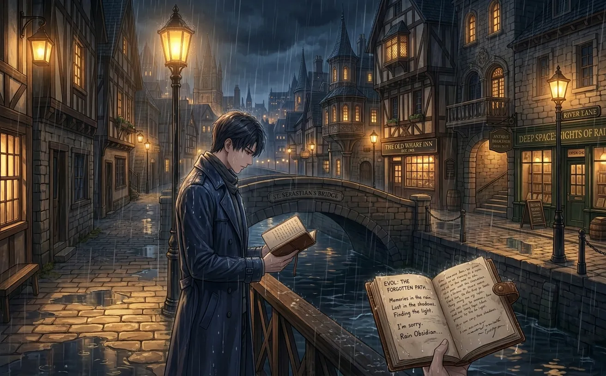
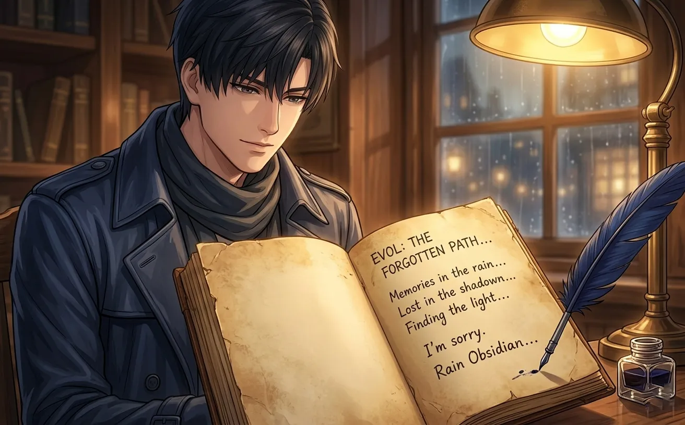
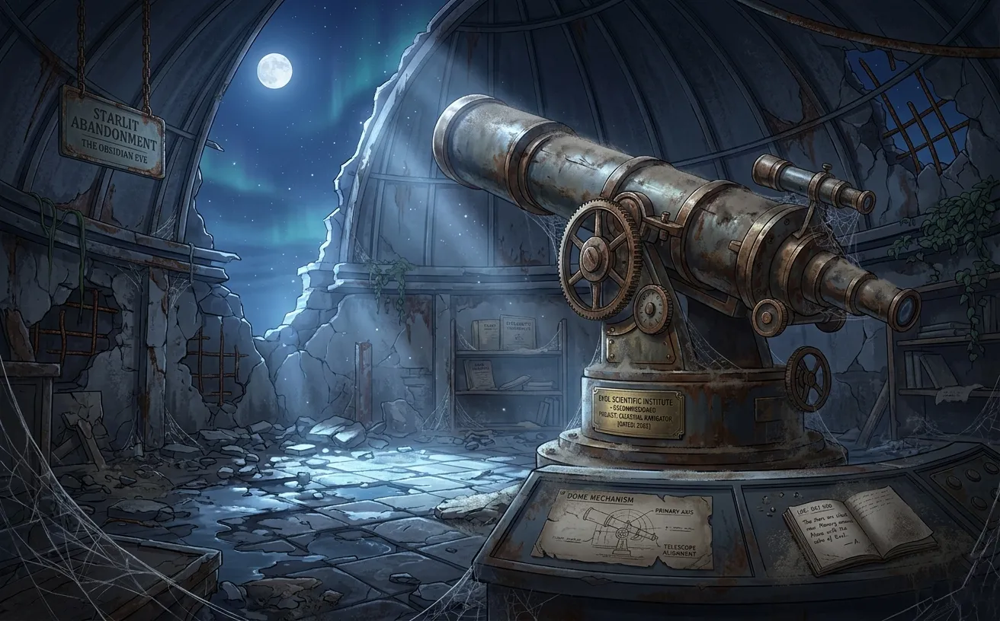
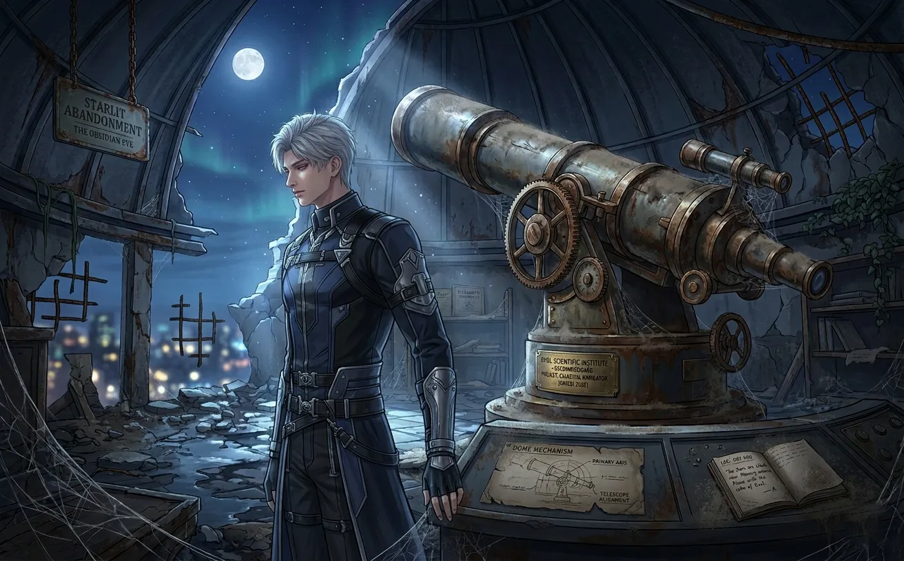
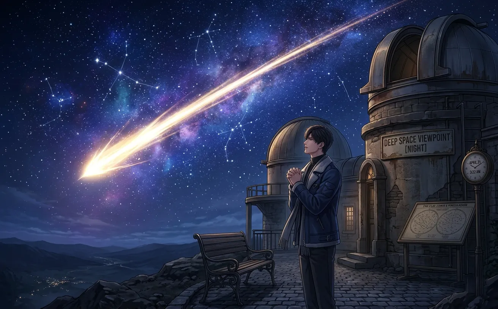
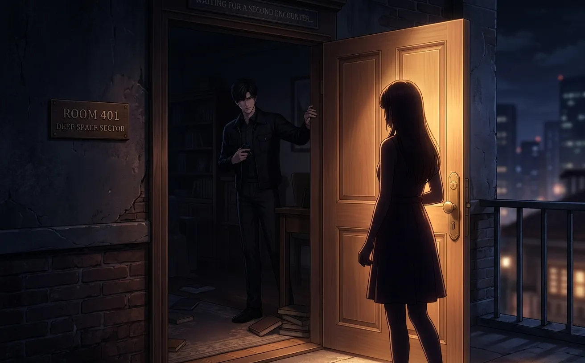

seventy-three thousand nights. some nights he slept. most nights he didn't. every night he waited.
two hundred years.
seventy-three thousand nights.
he stopped counting after the first hundred.

the first night was the hardest.
he stood on the edge of philos, watching the last star flicker. the sky was dark. darker than it had ever been. the light was dying, and he was leaving.
he made a promise that night. not out loud. to himself. to the stars. to her — even though she wasn't there, even though she wouldn't be born for centuries.
"i'll find you," he said. "no matter how long it takes."
the wind carried his words away. no one heard. no one ever heard.
he didn't sleep that night. he never slept on the first night of anything.

one year. three hundred and sixty-five nights. he had slept maybe a hundred of them. not well. never well.
he had learned to navigate this new world. the cities. the languages. the faces that blurred together because none of them were hers.
he didn't know what she looked like. not yet. but he knew he would recognize her. he had to. that was the only thing keeping him going.
that night, he sat on a rooftop and watched the stars. they were different from philos's stars. colder. more distant.
he wondered if she was looking at them too. somewhere. in some body. some life. some time.
he hoped so.

one thousand nights. he almost missed the milestone. almost.
he had been in the same city for three years. too long. people were starting to notice that he didn't age. he would have to leave soon. again.
he was tired. not the physical kind. the other kind. the kind that settled into his bones and made him wonder if any of it was worth it.
he almost gave up that night. almost. but then he remembered her voice. he didn't know if it was a real memory or something his mind had invented. it didn't matter. it was enough.
"i'll find you," he said again. quieter this time. like a prayer.
he didn't sleep. he never slept on the nights he almost gave up.

ten thousand nights. twenty-seven years. he had watched cities burn and be rebuilt. he had watched languages die and be born. he had watched people live and die and be forgotten.
he had loved no one. not because he couldn't. because he was saving it. all of it. for her.
that was stupid, probably. he knew that. but he couldn't help it.
he dreamed of her that night. for the first time. he couldn't remember her face when he woke up. but he remembered the feeling. like coming home.
he cried. just a little. just enough.

one hundred years. thirty-six thousand five hundred nights. he had stopped counting the ones he slept through. they were rare.
he had stopped expecting to find her. hope was exhausting. he couldn't afford it anymore. so he just... continued. not waiting. just existing.
that was worse, somehow.
he visited a fortune teller that night. for fun. or maybe because some part of him was still hoping.
"you're looking for someone," she said. "she's not born yet."
he already knew that. but hearing it from someone else made it real.
he paid her. left. stood in the rain for an hour. didn't feel it.

fifty thousand nights. one hundred and thirty-seven years. he had forgotten the sound of her voice. not completely — there was an echo. a ghost. but he couldn't remember if it was real or imagined.
that scared him more than anything.
what if he found her and didn't recognize her? what if she found him and he looked right through her? what if he had already passed her on the street a hundred times and never noticed?
he started keeping a journal that night. not of events. of her. every detail he could remember. the way she laughed. the way she tilted her head. the way she said his name.
he read it every night before he slept. to remind himself. to keep her alive.

he found the observatory on a tuesday. it was old. abandoned. the telescope still worked.
he looked at the stars. the same stars he had been watching for a hundred and sixty-four years. they didn't change. neither did he.
he decided to stay.
not forever. just... until he found her. or until he couldn't wait anymore. whichever came first.
he cleaned the place. fixed the telescope. made it his. it wasn't home. but it was close enough.
that night, he slept better than he had in decades.

seventy thousand nights. one hundred and ninety-one years. he had stopped hoping. almost.
he went through the motions. woke up. fixed the telescope. watched the stars. went to sleep. repeat.
the journal was worn. the pages were soft. he had memorized every word. he didn't need to read it anymore. but he did anyway.
he dreamed of her again that night. the first time in decades. her face was clear this time. he could see her. really see her.
she was close. he could feel it.
he woke up before dawn. stood by the window. watched the sky lighten.
"soon," he said. he didn't know if he believed it.

seventy-two thousand nights. one hundred and ninety-seven years. he almost gave up.
not dramatically. not with a speech or a ceremony. just... quietly. he thought about leaving the observatory. about traveling somewhere else. about starting over.
he didn't. because starting over meant admitting he had failed. and he hadn't failed. not yet.
he stayed. he watched the stars. he waited.
that night, a shooting star crossed the sky. he made a wish. the same wish he had been making for two hundred years.
"let me find her."
he didn't sleep. he never slept on the nights he made wishes.

seventy-three thousand nights. two hundred years. the observatory was the same. the stars were the same. he was the same.
he didn't know it was the last night. he never did.
he fixed the telescope. watched the stars. read the journal. fell asleep in his chair.
he dreamed of her again. she was close. closer than ever. he could almost touch her.
he woke up to the sound of footsteps. someone was climbing the stairs.
his heart stopped.
the door opened.
she was standing there. wet from the rain. her hair messy. her eyes tired.
"hello?" she said. "the door was open."
he didn't speak. he couldn't.
two hundred years. seventy-three thousand nights. and she was standing in his doorway.
he smiled. just a little. just enough.
"do you want to see the stars?" he asked.
she looked at him. confused. curious. something else he couldn't name.
"okay," she said.
he showed her the stars. he showed her everything.
she stayed until dawn.
he didn't sleep that night. but for the first time in two hundred years, he didn't need to.
she fell asleep on his couch. curled up. small. peaceful.
he watched her. not creepy — just... watching. memorizing. making sure she was real.
she was real.
he touched her hair. just once. just to be sure.
she stirred. opened her eyes. caught him looking.
"were you watching me sleep?"
"no."
"liar."
he smiled. "maybe a little."
she laughed. the sound filled the room. filled his chest.
he had waited two hundred years to hear that sound.
it was worth it.